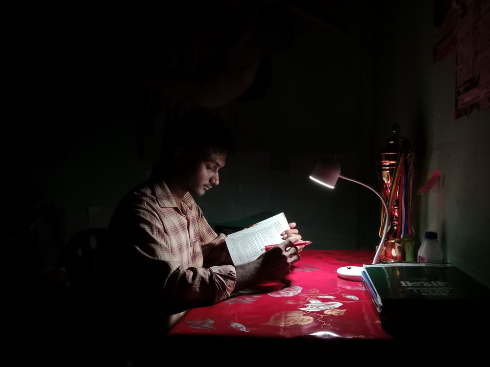

Ninety days, one desk.수능 90일, 가장 조용한 석 달
Final desk 2027 · 파이널 독학반
Winter school고3 올라가는 겨울, 5주
Check-in Dec 29 · 선착순 좌석 배정

Saturday test매주 토요일 08:10 실전 모의고사
Real CSAT timing · 수능 시간 그대로
Check-in7:30
 the quiet seat
the quiet seat등불 독학관 생활 규칙
- 입실7:30
- 퇴실22:00
- 휴대폰보관함
- 지각 3회담임 면담
*주말 자습관은 토 · 일 09:00–18:00

Lights out at ten불은 22:00에 꺼집니다
 Planner · Test · Notes플래너, 주간 시험지, 오답 노트 — 세 권이 기본입니다
Planner · Test · Notes플래너, 주간 시험지, 오답 노트 — 세 권이 기본입니다